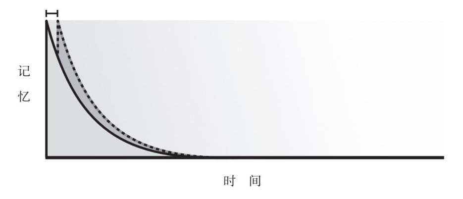
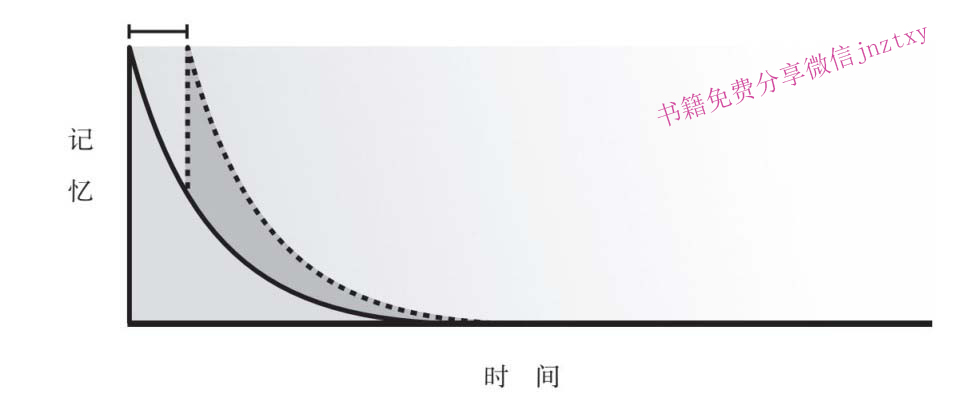
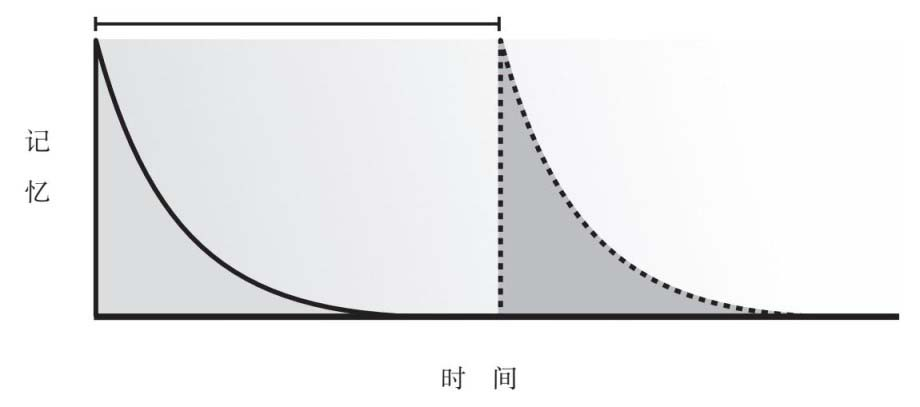

第六章
温故知新
知识的学习是一个永恒变化的过程。在这个过程中，我们需要学会回顾与反思，这是一种思维习惯，也是掌握专业技能的有效方法。温故而知新，才是推动知识更新迭代的终极法则。
对知识的回顾与反思
过度自信会阻碍有效学习
丹尼尔·卡尼曼是当代最重要的心理学家之一。 1 因为针对人类思维偏差的开创性研究，他在几年前获得了诺贝尔奖。他与同事阿莫斯·特沃斯基一起，创立了行为经济学。如果你曾经读过《怪诞行为学》《助推》 [1] 这些书，或者看过电影《点球成金》，那么这些作品在某种程度上都建立在卡尼曼的研究成果基础之上。
几年前，《卫报》的一名记者采访了卡尼曼。采访安排在伦敦一家酒店大堂旁边的一个小房间里。卡尼曼当时已经80多岁，声音低得几乎听不到。记者问了这样一个问题：“人们如何让自己的思维更高效？”
“如果我有一根魔法棒，我最希望消除掉的是什么呢？”卡尼曼斟酌着自己的话，“过度自信。”
卡尼曼的轻描淡写仿佛显不出这个回答的重要性。实际上，我们大多数人都遭受着过度自信的影响。我们自认为比实际上懂得多，几乎每个人都认为自己比一般人聪明、比一般人漂亮、比一般人技艺高超。在工作中，我们总觉得自己比旁人工作效率高；在聚会时，我们总觉得自己比屋子里的一般人更有魅力。
这种过度自信每个人身上都会有。在政治领域，最典型的例子就是在伊拉克战争中，战争还远远没有结束，战舰上就已悬挂上“胜利完成任务”的标语。在商业领域，只有过度自信才能够解释那些爆炸性事件：美国在线和时代华纳的并购案，或者房地产危机中雷曼兄弟公司的破产。在体育比赛中，拳击手伦诺克斯·刘易斯在赢得重量级冠军以后，居然被街头的无名小卒击倒。
随机测试题 26
判断：学生们可以准确地评价教育工作者的水平。
过度自信最终会阻碍有效学习。当人们处于过度自信的状态，就停止了学习的过程。他们不会再进行练习，也不会继续追问。在需要更加刻苦钻研的学习方式上，过度自信尤其有害。一旦我们认为自己已经懂了，就会马上放弃继续寻找知识内在关系的努力，更不会考虑知识和技能在不同场景下的运用。
过度自信可不单单是影响监控学习进度或者元认知方面的问题，而是停止了努力思考、停止了反省，不再努力把学习内容转化为自身的习惯。正是这样的问题引导我们关注学习的最后一个阶段：对所掌握知识进行回顾反思的各种方法。
你知道抽水马桶的工作原理吗？我猜你会说“当然知道了”，因为你每天都用抽水马桶。大多数人天天都用马桶，甚至打开过马桶后面的水箱盖，看看截水阀门，或者拨弄拨弄连接杆。
所以，如果以1~10分回答上面的问题，评价一下你对抽水马桶工作原理的理解程度：
1分：根本不了解。我不知道抽水马桶的工作原理。
5分：中等了解。我对抽水马桶的工作原理有基本的了解。
10分：专家级。我亲自安装过几个抽水马桶。
我猜一般人都会给自己5分或6分，也就是说，认为自己比平均水平好一点，但并不熟练。
乍一看，心理学家雅特·马克曼也觉得自己相当了解抽水马桶的工作原理。 2 马克曼在《学会思考》一书中说，他小时候花了不少时间鼓捣抽水马桶，马克曼记得父母经常对他大喊别浪费水了。所以，当被问及有多了解抽水马桶的时候，马克曼最可能给自己打5分或者6分。
然而有一天，马克曼问了自己一些关于抽水马桶的问题：水是怎么从抽水马桶流出去的？抽水马桶下半部分隆起的那个部分是干什么用的？我真的理解水是怎么流入马桶便池的吗？那一刻马克曼才明白，他自己对抽水马桶工作原理的理解远远不够，对抽水马桶这个装置也缺乏系统的认识。
马克曼对抽水马桶工作原理的理解，可以认为是一种思维假象。他认为自己懂了，觉得自己解释得清楚，但实际上，马克曼无法清晰地描述这个装置是如何构成的以及它的工作原理是什么，当然也不可能把抽水马桶完全拆开再重新组装回去。
这不是时间问题。马克曼和我们一样，完全有时间搞清楚铺设管道的技术；他也不缺乏能力，因为他曾经是认知科学学会的执行董事。但到头来，马克曼还是高估了自己的能力。马克曼在自己的书中写道：“每次我看抽水马桶工作的时候，实际并不清楚水是怎么从水箱流到便池里，又是怎么散开的。”
让我们来认识学习活动的“第二十二条军规”：我们知道得越多，就越认为自己了解得更多。所以，掌握一点点知识，可不是有点危险那么简单，它实实在在地迷惑了我们。心理学家们对这个观点研究了很多年，并给这个现象起了很多花哨的名字，如专家的盲点、流畅性偏好 3 、解释深度造成的幻觉等。
这些五花八门的名字最终都归结为一个核心观点：我们通常都认为自己知道的比实际的要多。我们高估了自己的能力，我们对自己未知的东西并没有清醒的认识。所以，你如果给自己有关抽水马桶的知识打了6分，实际可能只有4分。
因此，我们关于反思的第一课内容就是谦虚。在研究工作中，我也发现了谦虚的必要性。我在一份调查问卷里问：你是否能够有效分辨出好的教学方式？如果人们对自己的技能有准确的认识，那么答案应该是分成均等的两部分——50%低于平均水平，50%高于平均水平。但问卷结果是，90%的人认为自己分辨良好教学方式的能力高于平均水平。
当然，这种轻率也有好处。如果没有一点过度自信，估计就没人会写书或者出版研究成果了。自信也会提供一种激励。在面试过程中，夸大自己GPA成绩的大学生，比起那些实事求是的学生，成绩提高得更显著。做这项研究的一个研究人员解释说：“夸大成绩的学生具有更高的奋斗目标。”
承认“我啥也不懂”毕竟是一件很丢人的事情，我对自己曾经的过度自信也耿耿于怀。这些年来，我曾经在马路上让骗子得手，也曾赶飞机记错了日期。几年前，我去加州一个立法机关做讲座，结果跑题太远，以至一个立法官员半开玩笑地说：“恨不能揍你一顿。”
造成学习活动中过度自信的一个原因是熟悉程度较高。如果一个观念过于得心应手、习以为常，人们就有可能认为自己对这个观念理解深刻，即使事实未必如此。这就解释了为什么人们对抽水马桶这样的问题过度自信——抽水马桶随时随地可见；也解释了为什么人们对分辨良好教学方式过度自信——人们看到的各种教育培训太多了。
我们还会在一些情况下过度自信。比如，看起来简单平常的事情，就容易让人觉得学起来更简单；文章里有大幅的图片，人们倾向于认为自己能够理解书中的内容；一位教授的课程让学生着迷，人们就会认为学生可以从他那里学到更多的知识，尽管实际情况并不尽然。 4
我到奥斯汀的得克萨斯大学拜访雅特·马克曼的时候，听他讲过另外一个例子：TED [2] 演讲（在iPad上可以看到这档演讲节目）。TED是一档被精致制作的演讲节目，演讲的题材从杂耍到道德伦理都有涉及。聚光灯下、镜头前面，总有很多动人的故事和戏剧化的时刻。这些视频内容的观看次数超过千万。
马克曼认为，从学习角度看，TED演讲的弊端要大于好处。“问题不在于演讲本身，”马克曼说，“是我们使用这些演讲内容的方式有问题。我们观看了15分钟非常流畅的演讲内容，然后就转入下一个演讲。”换句话说，TED演讲看起来像一次学习的经历：一个专家在聚光灯照射下的舞台上演讲，但是这些内容似乎获取得太容易，因此也会被轻易地忘记。
这似乎也不是什么大不了的问题。那么，TED演讲采取精雕细琢的方式呈现一个话题会怎样呢？谁会反感制作精巧的视频内容呢？然而，讽刺之处在于，这类精雕细琢会阻碍我们的学习活动。一些心理学家把这种现象叫作学习活动的“双重诅咒”：如果你不知道自己是否正确，那么也就不知道自己是否错误；如果事情看起来轻而易举，那么学到的内容就相对较少，因为如果事情看起来轻而易举，人们就会减少自己付出的努力。
在学习活动中，还有一个造成过度自信的因素，那就是过去的经历。 5 过去的经历会影响我们对学习活动做出判断。如果我们化学考试总是考A，可能对化学考试投入的时间就不会很多，即使下一次考试可能比上一次难得多；如果我们经常使用PPT进行宣讲，那么对一次新的宣讲就不会投入很多准备时间，即使这次新的宣讲与以前的宣讲内容都不一样。
军事领域把这叫作“胜利病”。 6 如果一名将军打了很多胜仗，他就有可能变得自负，他太相信自己的能力了。“卡斯特的末日”就是一个经典的例子。
1876年夏，在小巨角战役之前，中校乔治·阿姆斯特朗·卡斯特的军衔快速提升。他在南北战争的多次主要战役中战功彪炳，比如盖茨堡战役。当罗伯特·爱德华·李 [3] 将军在阿波马托克斯郡府投降的时候，卡斯特也在场，就在尤利西斯·辛普森·格兰特 [4] 身后几步远的地方。
从经历看，卡斯特似乎永远不会有败绩。尽管有各种证据和明确的信号说明他可能遭遇到数量巨大的印第安人军队，但卡斯特还是严重地低估了对方的战斗力。他从来没有想过苏族印第安人会切断他的逃跑路线，完全忽略了其首领坐牛（Sitting Bull）比他那疲惫不堪的士兵要多出5倍的战斗力。
因此，卡斯特没有进行事先规划，也没有制订临时应急方案，甚至没有发布详细的战斗命令。最终卡斯特和他的200名士兵在面对超过1000多名印第安人的战斗中全军覆没。据传闻，卡斯特死前还在喊：“士兵们！冲啊！我们困住他们了！”
随机测试题27
判断：右脑型人与左脑型人的学习方式不一样。
认知偏好对学习的影响
在学习过程中，反思不仅仅可以解决过度自信的问题。人们的注意力通常不够集中，我们需要经常回顾所学的内容，因为我们通常更像机器人，更机械而不是更深思熟虑。这不是说我们经常会判断错误，而是说我们有时根本就不做判断。
小时候，我的卧室门外挂着一幅圣母马利亚的画像。这幅画像是中世纪画作的一个复制品。画面上，优雅的马利亚抱着还是婴儿的耶稣，头顶一条闪亮的白纱头巾。画作镶着木框，我每天都会经过这幅画好几次。
接下来的事儿就是一个家庭故事了：那种讲过上百次的家庭回忆以及一点谆谆教导。有一天早晨，妈妈冲进厨房，大声问我们，是谁给圣母马利亚画上了胡子，把耶稣的妈妈生生地变成了格劳乔·马克斯 [5] 的样子。
“谁干的？”妈妈大声地问道。“谁把圣母马利亚的画像毁掉了？谁给马利亚画上了一抹小胡子？”
起初，妈妈指着哥哥，认为是他干的。哥哥当时十几岁了，毫无疑问也是非常调皮捣蛋的。妈妈问他，这是怎么回事？是不是他用记号笔乱涂的？问他知不知道这有多严重？
哥哥一口否认。
然后姐姐又受到盘问，是不是她在马利亚脸上乱画的？是不是她闹着玩儿画的？妈妈追问她。
姐姐也一口否认，并大声反驳，声称自己完全无辜，绝对没干过污损马利亚画像的事。
我当时只有六七岁——还太小，犯不了什么事。然而，我也被盘问了半天。“是你在画像上画的胡子吗？如果不是你，知道是谁干的吗？”
记不清是当时还是那天晚些时候，爸爸哈哈大笑地说，几天前甚至好几个星期以前，是他拿记号笔在画像上画了胡子。他说：“这幅画在我们家太不受重视了，这幅如诗的画作，默默地待在那里，理应在我们家发挥更大的作用。”后来，爸爸把这件事情叫作“胡子的报复”。
对这件事情的解读很简单。卡尼曼的书中提到，我们有两种不同的思考方式：一个是我们直觉的大脑，自动做出迅速反应；相比之下，我们还有一个深入思考的大脑，缓慢而笨拙。多数时候，我们依赖于直觉大脑，而这种方式通常运转良好，因为它只需要很少的时间和努力，而我们通常不愿意投入任何的脑力活动。
所以，这也意味着我们会错过很多细节。 7 我们可能读了一段文字，但并没有理解其中的内涵；我们看到有人讲解一些技巧，但我们并没有真正地学习这些技巧；一连几个星期的时间，我们每天都从画着胡子的圣母马利亚画像前经过，也没有注意到“她”被画上了胡子。
关于直觉大脑的研究非常广泛，而且多少都有些怪诞。有一项研究问实验对象：人们是否知道灭火器箱在哪儿？尽管这些实验对象在那个大楼里工作了十几年，但是只有不到1/4的人知道离他们最近的灭火器箱的位置。
另外一项实验中，研究对象路过了心理学家们故意设置的一次街头斗殴，然而只有50%的实验对象注意到了斗殴事件。当时两名男子在街边扭打、喊叫，但是只有一半实验对象注意到了这件事。这项研究报告的题目是：“如果根本不关注拳击俱乐部，你根本就不会谈论它”。
我们看起来只是比较懒，从认知角度看，也确实如此，我们不愿意主动花精力关注什么事。想要聚精会神是要花精力的，虽然我们有意识地关注了，但直觉仍然在发挥作用；虽然我们有意识地深思熟虑，但直觉仍然会在每一个具体行为中发挥作用。我们还没有来得及反应一下事实的时候，就会产生一种直觉思维：我早就知道会这样。 8
在生活中，我在购物时就发生过很多次这样的情况。比如，我想买一个煤气烧烤炉，于是我会尽量搜集证据，证明新烤炉让我省时省钱。为了买一个东西，我头脑里会列出一张长长的、完全自说自话的理由清单：我在雨天没法用我的碳烤炉；用新烤炉食物更健康；买小燃气罐要比买碳容易；这个新的烤炉正在促销。然后，我点点鼠标，商场寄来了一个新烤炉，可它直到现在还放在后院里，一次都没用过。
任何人都无法避免这种认知偏好。专家和普通人一样会受到认知偏好的影响，大师与学徒一样会被认知偏好绊倒。无论你财富多寡、贤达愚昧，概莫能外。查尔斯·达尔文的学说，至今没有得到证实；托马斯·爱迪生认为交流电永远不可能大规模应用；如果你在我家长大，也一样注意不到圣母马利亚脸上被画上了胡子。那么，我们该怎么办呢？
对学习内容的反思是一种思维习惯
“温故”在学习活动中的重要性
40岁生日的那天早晨，我打开几个礼物以后，一封电子邮件跳到我的收件箱里。邮件说：“尽快联系乌尔里希·伯泽尔。”这是一封比尔和梅琳达·盖茨基金会发来的消息，说比尔·盖茨先生想和我进行一次会谈，讨论一下教育基金的事情。我是不是要尽快给基金会打个电话呢？
一开始，我以为这封邮件是个恶作剧。就像我哥哥搞出来的把戏，打算在我40岁生日当天捉弄我一下。我告诉我太太，她和我的反应一样，只是瞟了我一眼，好像在说：你行了吧，比尔·盖茨见你干吗！
然而，那封会面请求的邮件居然是真的。几个星期以后，我走进了一间大会议室，这间会议堂的一面墙摆满了书籍，会议桌光洁如镜。窗外远处，一艘艘小船荡漾在波光粼粼的亚罗湾上。房间的最里面，这个世界上最富有的人正在和他的同事聊天。
这次会议的几天前，基金会的工作人员和我简单整理了一份涉及资金支持以及教育成果的谈话提纲。这份提纲大概有40页，包含了8个不同的附件。提纲在会议前不久提交给了盖茨先生。会议室里面坐满了人，会议开始不久，盖茨先生就对我们提供的一个数字问了一个非常具体的问题。
“为什么附件里的支出数额与提纲中的数字不一样？”
这是一处非常细微的差别，是脚注里的注释，就像是询问火星上中微子的重量，或者第一个获得短跑金牌的美国人一样。我第一反应以为自己听错了，但马上我就进行了解释。我说，附件里面包含了所有的成本支出，其中包含资本性支出。在提纲的正文里，我们包含了当期成本，但是没有包括房屋的支出。
幸亏我提前知道盖茨先生会问这类问题。我出发飞往西雅图之前，同事告诉我，盖茨先生经常在会议开始的时候，从非常具体的问题开始发问——这类问题很可能会围绕着一个非常具体的数字。“盖茨先生希望他的‘排球’对手能够接得住他发来的球。”哈佛大学的汤姆·凯恩告诉我。
从管理的角度看，人们可能觉得盖茨先生很善于发现漏洞。他在会议上问一个非常具体的问题，因为他想以此检验开会的人是否对会议议题有深入的理解。比起管理领域的人，认知科学领域的人沟通时更含蓄客套一些。盖茨的做法是在进行某种评估：在座的专家是真正的专家吗？每个人对这个专题理解多少？与会人员真的理解资本支出和当期支出的差别吗？
我并不很清楚为什么盖茨会选择这种评估方式。但是，显然像盖茨这类人确实需要密切关注和评估到达他们桌上的信息。首先，人们通常都用“没问题”来应对自己的上司，都会说领导爱听的话。其次，人们都有过度自信的倾向，就像我们前面看到的情况，人们即使一无所知，也倾向于认为自己很懂。
在学习活动方面，盖茨先生提供了一种重要的模式：我们需要回顾所学。为了提防偏见，克服过度自信，并最终掌握一个专业，我们需要审视我们的思考过程以及周边人的思考过程。
本书中我们已经多次提到这个观点，但是在学习活动的这个最后阶段，专门的反思活动是这个阶段的核心内容。在学习某一专业技能的过程中，我们需要问问自己：什么内容让人感到困惑？什么内容没有解释清楚？我怎么知道自己已经掌握了哪些知识？
卡内基–梅隆大学的玛莎·洛维特每次结束课程的时候，都会给学生们提两个书面问题，洛维特把这些问题称为“收尾问题”。学生面对这些问题需要问问自己：我从课程中学到了什么？难点在哪儿？还有哪些问题不理解？
在洛维特看来，收尾问题有很多好处，其中之一就是把学生的关注点引导到他们领会有差错的部分，并引导学生思考如何改进。洛维特通常建议学生们关注他们感觉最困难的部分，通过关注这些洛维特称为“胶着点”的内容，学生们可以收获更多。洛维特告诉我：“主要是让学生们形成一种思维习惯，经常问问自己：我究竟懂了多少？哪些地方理解得不够清楚？”
学习场景的变动也会对学习活动造成影响。当调整一下学习的媒介，我们会更容易发现学习中的问题。这就解释了为什么你把邮件发送出去以前，应当大声地朗读出来，这样可以让你更轻易地发现错误。这种认识也能说明，为什么把文字记录打印出来在纸面上审核，可以帮助我们发现打字错误。当我们把文字打印出来，而不是在电脑屏幕上看的时候，就提供了一种新的阅读视角，这会让错误更容易发现。
这种回顾的学习方法最重要的在于态度。在写这本书的时候，我意识到我对自己生活中某些重要方面的自我表现有点骄傲自大。我有时候会写些文字，有时候会做做演讲，但似乎没有认真地思考过我该如何继续提升自我；我会抚养孩子，也会管理团队，但似乎没有静下心来想一想我应该如何进一步改善我的做法。
也许这是我人到中年的生活方式造成的，也许这是我忙乱的工作和生活造成的，但归根到底，我并没有系统化地评估过我的自我表现，即使在我特别在意的生活方面，比如育儿，我也没有认真、系统地评估过。于是我决定战胜自己的懒惰。这应该不难，不就是做一做事后评估嘛。
有时候我觉得自己在公开讲话方面比较笨拙，有时候会说话不清楚、结结巴巴，我的真实想法从自己嘴里说出来后就像醉酒后的语无伦次。于是我试着把自己讲话的过程录下来，找找自己说话中的口头禅。我还跟一位公开演讲教练探讨过，在几个小时的时间里，教练给我和几个同事提出了不少提升公开讲话技巧的建议。
写作方面也一样：我知道自己可以做得更好。我一度与一名自由职业的编辑保持持续合作，这样我就能得到一些专门的批评意见，发现我句子段落的缺点。在这方面，我还开始尝试了一些新方法。我曾经定期去拜访住在附近的一位顾问，让他来帮我提高注意力，从而更好地把握自己的思维。
所有这些努力，都是为了更认真地评估我的专业化水平，回顾我的成功之处与失败之处。换句话说，我所从事的活动，都增加了一个类似周一晨会那样的环节。这完全算不上传统意义上的学习活动，我没有上什么课程，没有参加什么讲座或考试，也没有视听材料或课本，只是专门花时间回顾一下自己的表现。然而，就这样一点努力已经足以帮我实现自我提升。
最后，我们很容易忘记，习得专业技能需要依靠有意识的自我觉察才能做到。我们都需要问问自己：我是怎么知道的？我都懂得了哪些？我有没有核实过自己所掌握的内容？比尔·盖茨曾经说过：“最棘手的客户是你最佳的学习资源。” 9 在商业领域内，这么说一点没错。
我们大可不必回避这种不快的情绪，我也觉得，学习最重要的驱动力就是要简单回顾一下，搞清楚学到了哪些内容，让不愉快的错误成为最佳的学习资源。
跟踪学习情况，提高专业水平
说到学习活动的反思，我们需要来自外部的检查，毕竟人们都容易放松对自己的要求。就像骗子一样，我们有时会相信自己的谎言，尤其是在学习方面，我们都自以为比实际懂得多。因此我们需要来自外部的检查，即有针对性的具体问题和专门的反馈意见。
教育工作者在这里扮演了关键的角色。比如在公开演讲方面，教练给我的小窍门和反馈意见对我帮助很大；我的写作能力的提高也是因为找到了外部的帮助和专门的评估意见；再想想我的篮球教练杜安·塞缪尔斯，是他帮我真正意识到我在跳投动作上的理解和误区。
反思的另外一个重要来源是同伴。同事对于评估我们的专业能力非常有帮助。在空军，有一个通用的办法确保人们获得集中的批评意见。每当飞行员完成F-16战斗机的训练以后，整个团队会和完成训练任务的飞行员聚在一起，讨论所学到的知识与技能。其他组织内部也有类似的做法。比如，在政治圈里，集体讨论环节被称为“事后检讨”；在医院里，这个过程叫作“汇报”。
从某种意义上说，我们再次采用了反馈的方法。即使专业水平很高的人，通过了解自己做得对与错也会有所收获。例如，要成为美国职业棒球联赛的裁判需要付出很多的努力。裁判员汤姆·阿利翁30多年前开始他的棒球裁判职业生涯，年复一年在初级联赛耕耘，直到最后应邀加入美国职业棒球联赛，他三振出局的转身动作成了标志性的动作。 10 阿利翁的工作毫无疑问是很不容易的。一个美国职业棒球联赛投球手投出的球轻轻松松就达到了时速100英里（约161千米），几乎没有给裁判判断好球坏球的反应时间。投出的坏球有时候还会打到裁判的面罩上，冷嘲热讽更是家常便饭。球队经理唐·马丁利曾经在比赛中对阿利翁大喊：“你睡着了吗？”那场比赛，阿利翁把马丁利赶出了球场。
阿利翁坦承自己有时也会犯错，比如，没有看清一个好球，或者误判了一个弧线球，抑或没有仔细看清投球手投出的球是怎么通过垒板上方的。在一次比赛结束后的采访中，阿利翁说：“我们当然希望每个球都判断正确，但我们是人，误判是避免不了的。” 11
为了帮助阿利翁这样的裁判减少误判，美国职业棒球联赛几年前引入了一项新技术，以核查裁判判断是否准确。这套软件采用了复杂的摄像机系统和各种运动跟踪系统，可以清晰地判断出投出的一个球是好球还是坏球，这也同样帮助裁判员评估自己的判断准确度。
这些改进提高了裁判员的水平。数据显示，使用这套系统以后，裁判员判断得更准确。这项技术对年轻裁判的作用尤为明显，他们可以利用这套系统进行辅助训练。现在，年轻裁判员一进入美国职业棒球联赛，其裁判水平就可以基本达到阿利翁这样经验丰富的老裁判员的水平了。
这个案例要说明的是，如果能够紧密跟踪学习状况，即使是已经达到专家水平的人，也仍然有明显的提高。与任何一种反馈系统相似，这种评估办法必须非常及时。美国职业棒球联赛三振出局的数据最大的好处在于，这些数据是即时处理的。裁判员达斯第·德林杰研究了好球部位的数据以后说：“如果有这些信息，我就可以立刻调整我的判断方法，这对我太重要了。”
自测是另外一种进行评估的方法，它能让你清楚地知道自己掌握知识的程度。研究学习活动的专家、心理学家里甘·古隆不厌其烦地提醒学生：“你们需要自我测验，做一做课后练习，多做习题。”古隆说：“做自测习题会让你迅速成长。”
为了对自测这种课后回顾方式有一个更直观的了解，我到马里兰大学帕克分校旁听了一堂物理课。在一排排蓝色塑料座椅的教室里，大三学生布兰登·菲什坐在中间位置，我坐在他旁边。
跟教室里上百名学生一样，菲什随身带了一个随机测试题答题器。这个小设备看起来像一个电视遥控器，学生们可以用这个设备对应老师给出的课堂练习题，用无线方式答题。
这是春假以后的第一个星期，本·德赖弗斯教授先在教室前面的大屏幕上给出了一个开玩笑的问题：“春假过得怎么样？”
几声偷笑过后，教授又给出了4个小问题，基本上都是围绕电容充电时电荷分布的问题。我跳过了这个过程，毕竟我不需要对前期课程的掌握程度进行评估。菲什按了答题器上的黑色按钮，把自己的答案发了出去。
这个过程一点儿也不难。每个问题也不复杂，只是考察几个知识点。菲什把这种测试当作跟踪自己学习效果的手段。测试结束后，屏幕上显示一张图表，上面有正确答题的数量，以及学生正确答题的比例。
总的来看，学生们回答得并不好。看来学生们过了一个春假，把假期前学过的内容都忘了。有几道题，班级里一半的学生都答错了。也就是说，德赖弗斯帮助学生们进行了自我学习的评估：学生们意识到，自己该掌握的东西没记住多少。
于是，德赖弗斯教授在课堂随后的时间里，主要用来回顾关键概念，并随堂给出了更多的测试题。课后我和菲什聊天，菲什说这种习题自测的办法很有帮助，它会提示自己还需要学习哪些内容、已经掌握了哪些内容。“课堂会强调重点，我认为这是一种有效的教学办法，”菲什告诉我，“让我们知道自己没有掌握哪些知识对学习更有帮助。”
菲什和我聊了很久。他告诉我，毕业以后准备从事人口学研究。我问他，这种自我小测验的方式是否有问题，他说：“如果人们不想做这样的测试题，中间会有一段非常尴尬的停顿。”
看起来，菲什已经把这种自测行为内化成一种学习习惯了。他明白，清晰地识别尚未完全掌握的内容是一种强大的学习方法。结束谈话之前，菲什告诉我：“我喜欢测验。”此前还从没有大学生对我说过这样的话。
随机测试题 28
你第一次学习投掷飞镖，下面哪种练习方法最有效？
A.重点关注学习过程（例如，记录投掷结果，学习如何正确握飞镖）
B.重点关注学习结果（例如，朝靶子投掷，尽力投到靶心）
C.以不同方式了解投掷技巧（例如，视觉方式、动力学的解释）
D.在投掷中学习技巧（直接上手投掷，看看情况怎样）
间隔时间学习法
我们都会遗忘，有时候可能是几天，有时候也就几分钟。但是在学习过程中，遗忘始终伴随左右。大脑对记忆的作用就像筛子一样，很多的记忆过一会儿就会遗忘。更糟的是，即使是那些已经记住的细节，随着时间的推移也会遗忘。
在学校里，遗忘是随时发生的事情。在你非常专注地花费大段时间学习以后，遗忘也随即开始。一项研究表明，医学院学生通常会在几个月时间内忘记他们所学内容的50%。因此，如果一个勤勤恳恳的医生在医学院第一年解剖课考试都得A，不到一年之后，再参加同样一门课程的考试则很有可能不及格。 12
我们当然希望对所见所感过目不忘，然而我们会痛苦地意识到，一生中的关键时刻——一次盛大的毕业典礼、一个亲密的朋友、我们的初吻——都将逐渐淡忘。认知科学家在实验室里对遗忘现象进行研究发现，我们的记忆似乎配备着一个计时器。当计时器响起，而我们没有再次回顾这段记忆，那么它就会被遗忘。研究人员把这一现象称为“遗忘曲线”。 13
围绕记忆与遗忘的研究已经开展了几十年。这些作者撰写的研究成果，主要存在于那些布满灰尘的研究期刊和晦涩的书籍里，直到罗杰·克雷格出现，情况才有所改变。 14 克雷格小时候很喜欢玩儿游戏，象棋、拼字、扑克、棒球等他都真心热爱。“我非常热爱竞争，”克雷格说，“我喜欢赢的感觉。”
于是在读研究生期间，克雷格决定挑战哥伦比亚广播公司益智问答游戏节目《危险边缘》。从童年开始，克雷格就和祖父母一起观看过无数次这个节目；在研究生院，有的同学也曾经想上这个节目。克雷格在《连线》杂志看到一篇文章，文中详细介绍了学习内容在时间维度上间隔开具有很大的价值，他觉得自己可能在这方面比一般人有优势。
“所有学生都警告我别死记硬背，”《连线》杂志上的这篇文章说，“但是把学习活动按精确的时间间隔开带来的效果太明显，因为它是完全可以预测的，以至在研究人员提出时间间隔效应后，心理学家们开始极力推动教育工作者采取这种方式来加速人类的进步。”
克雷格觉得，《连线》杂志的这篇文章很可能会让他取得一些优势。当克雷格在弗吉尼亚技术学院准备参赛的时候，他经常反复地回顾各种概念以避免遗忘。他甚至写了一段计算机程序帮助自己把学习内容按照时间跨度分散开，这样他就可以按照固定的时间间隔复习所学内容。
《连线》杂志给出了更深层次的间隔时间的学习方法。克雷格马上下载了一个叫作Anki的软件。这个软件采用了先进的算法，按照间隔时间学习方法，在人们即将忘记的时候对人们进行测试。该软件的网站这样介绍它：“它只回顾你即将忘记的内容” 15 。
配备了《危险边缘》题库以后，克雷格开始训练自己的比赛技巧。克雷格按照自己的遗忘节奏，不断地回顾美国总统、老电影名字等各种事实和细节。如果克雷格在某个细节上出错，Anki软件就会在几分钟后再次提问同一问题；如果克雷格正确回答某个问题，那么这个问题随后几天内不会再出现；如果克雷格对这个问题的第二次回答仍然正确，那么随后几个月该问题都不会再出现。
这种方法可以表示为遗忘曲线图，该图显示了学习内容可以记忆的时间（见下图）。根据图示，你学习一些内容几天甚至几分钟后，可能就已经忘记了。
例如，你在聚会上见到一个人，他告诉你他叫特里，这就是图中的实线部分，意味着你可能过几天就想不起特里这个名字了。如果你几分钟以后提醒自己，那个人叫特里，这就是虚线部分的含义。虚线的意思是说，几分钟后提醒自己会对记忆有帮助，但是帮助不大，过几个星期，你还是忘了特里这个名字。

几分钟后的遗忘曲线图
但是聚会几天以后，你再次想起他叫特里，这样的话，图中的虚线部分就会向后推移一段，记忆的情况就如下图所示：

几天后的遗忘曲线图
如果经过几个星期，你再次回想起特里的名字，那么，你遗忘的速度就如下图所示：

几个星期之后的遗忘曲线图
关键还是虚线部分。虚线就是学习的标记、记忆的标记。这就对应着罗杰·克雷格参加《危险边缘》电视节目之前，对题库内容所做的准备工作。
2010年9月，克雷格首次参加这档电视节目。节目录制现场有主持人亚历克斯·特里贝克和另外两名选手，克雷格基本上一道题都没有错就击败了另外两名选手。他正确地回答了一道又一道问题，最后，他打破了几年前本·詹宁斯创造的纪录，赢得了该节目历史上单场最高额的奖金。
随机测试题 29
判断：在学习过程中，学生们应当在他们还没学过的内容和近期学过的内容之间切换，交替学习。
那天晚上，克雷格回到洛杉矶的酒店后，虽然兴奋，但更多的是惊奇。他知道他在节目中表现不错，间隔时间练习效果有可靠的科学依据。出乎克雷格预料的是，他没想到效果可以这么好，完全是绝对优势。“哦，太不可思议了，是不是效果太好了。”克雷格这么想。
克雷格那天晚上基本没怎么睡。他想，《危险边缘》节目会不会再请他回去参加节目？特里贝克会不会以为他作弊了？克雷格没做错事，他只是利用记忆方面的基本研究结论来提升自己的参赛技巧而已。最终，《危险边缘》确实邀请克雷格再次参赛，他又赢了6场比赛，并在各场比赛的全明星选手的决赛中赢得了冠军。
克雷格现在住在纽约，是一名数据科学家。在工作中和不同的游戏比赛中，他仍然经常使用Anki这款软件。克雷格认为，间隔时间学习法只是掌握知识的一种好方法，可以用来对抗遗忘。“任何想赢得比赛的参赛选手都会进行练习，”克雷格告诉NPR记者说，“你可以选择随意的训练方式，也可以选择高效的练习方式，而我选择了后者。”
罗杰·克雷格呼吁人们终止那种随意的学习方法，得到了一些回应。大概有六七家软件公司承诺帮助人们把学习活动按照时间间隔分散在几天、几周、几个月甚至几年里。SuperMemo（一款记忆辅助软件）可能是其中最早的软件产品；最近，VocApp软件开始允许用户在他们间隔时间的学习活动中包含图片信息；DuoLingo是专门用于外语学习的软件，帮助人们把学习西班牙语词汇安排到一段时间里。
间隔时间学习法在其他领域也得到了应用。有些公司培训课程尝试把课程在时间上分散开。威瑞森（Verizon）电信公司现在会给员工发放跟踪训练材料，帮助员工温习已经学过的内容； 16 汤森路透社采用这种间隔时间学习法，协助员工永远把战略作为最高行动准则。
这种方法之所以有必要，关键在于学习活动通常是集中在一定时间之内完成的。间隔时间的做法基本上还没有解决人们填鸭式的学习方法。人们往往不会把学习内容分散安排在一个时间段里，而是试图用一个下午学完所有内容；人们也不会找时间回顾重要的概念和细节。 17 比如，大部分人都不知道美国独立战争中最后一次战役的名称（提示：战斗发生在莱克星顿），为什么会这样呢？我认为是因为没有人回顾过这些内容。
学校总体上还是推崇死记硬背的，尽管每年开学有几堂复习课，但也很少能把原有内容重新复习一遍。对所学内容的累积型考试也是把学习活动按时间间隔开的一种方法，但它一般只在期末才会采用。很多教科书根本没有专门复习的章节，充其量也就是在每章后面有一两道练习题。
哪怕是最少量的按时间间隔的学习活动，即进行定期复习都可以提高学习效果。当人们采用几个步骤把所学内容按时间间隔定期复习，他们会发现成绩的显著提升。在这方面，我见过最好的例子就是纳特·科内尔。当科内尔在洛杉矶的加州大学读博士后的时候，他注意到学生们完成学校作业的方法很有意思。
科内尔在校园看到，一些本科生用一小摞提示卡片进行自测，就是用大概六七张提示卡片自测一下对某个概念或某个细节的理解情况。因为每一摞只有几张卡片，因此学生们很快就把这些卡片翻完，并感觉已经学得很不错了，然后就把卡片丢到一边了。
校园里另一些使用提示卡片的学生却采用了完全不同的方法。他们的提示卡片不是一小摞而是一大摞，有的学生的提示卡片一摞有一两英寸（1英寸=2.54厘米）厚。这样一来，学生们学习的内容就在时间上更加分散。也就是说，学生看到同一张提示卡的时间间隔更长，有可能已经忘记的时候才再次看到同一张卡片。
科内尔知道学生们不会很在意这些差异，但是他相信，一摞卡片的数量多少会影响到学生们的学习效果。于是他很快组织了一次实验。在他的实验室里，第一组实验对象用一大摞提示卡学习词汇；第二组实验对象学习同样的内容，但是卡片分成了几小摞。每一组学生都需要记住单词的含义，这些单词都是一些不常用的单词，甚至以前听都没有听过，比如“effulgent”（光辉的、灿烂的）、“abrogate”（废除）这些单词。
科内尔的实验还有另外一种视角，即把实验过程看成一次演说的准备工作。也许你要给客户做一次宣讲，或者在一次家庭活动中做一个简短的发言。关键是，你是把完整演讲稿每天练习5分钟、连续练习4天好（如同一次练习较多提示卡的学生），还是把演讲稿分成4个较小的部分，每天只练一部分，每次练习5分钟更好呢（如同每次使用较少提示卡的学生）？
从实验对象的角度来说，他们都认为每次使用较少量提示卡的效果更好。他们希望把学习分成不同的批次，每次集中精力学习一部分。实验开始的时候，大部分学生都认为每次使用较少的提示卡可以记住得更多；也就是说，多数人认为，准备一个演讲的最好方法是把演讲分成几个较短的部分进行练习更好。
但是科内尔的研究结论正好相反：同样内容在时间上分散开的学习方式效果更好。在实验中，在练习时长相同的情况下，几乎每个使用一大摞提示卡进行练习的学生，测试结果都比使用一小摞的更好。而且，使用大摞提示卡的学生测试成绩要高出1/3。
对于任何想学习的人来说，这里的实用技巧都很明确：我们把同样内容的学习活动在时间上间隔开的努力是值得的，技能训练也应该采用时间上间隔开的训练方式。如果你正在练习小提琴，那么不要几个小时不停地练习一首曲子，而应当时常回顾一下同一首曲子，这样这首曲子就印在了你的头脑里。
想在一个关键考试中取得好成绩吗？那么学习活动要尽早开始，这样就可以尽早地把学习活动分布在较长的时间段里。过几个星期就做一做自测，保证让所学内容常读常新。我自己已经采取了这一方法：平时缩短作业时间，周末增加作业时间长度，目的就是让学习过程可以在时间上间隔开。
现在科内尔已经是威廉姆斯学院的一名教授了。他依然经常看到学生们习惯性地用小摞的提示卡片进行自测，他每次都无奈地摇摇头。“把学习活动在时间上分散开不需要额外的时间，也不需要投入额外的资源，更用不着买一个iPad来辅助。”他说，“这种学习方法就像一个礼物，不仅有效，而且免费。”
深入思考是学习过程的一个关键部分
回顾与反思不仅是为了评估学习效果，更重要的是为了深化对于知识的理解。 18 我们需要对所学知识与技能深思熟虑。
帮助深入思考的一些积极方法
我们的社会并不热衷于反思，这个世界始终强调的是行动。思考通常是无能的别称，花时间酝酿决定被看作是懒惰的表现。美国前总统乔治·W.布什把自己称为首席决策人而不是首席思想者。
以足球守门员为例。在罚点球的时候，守门员一般都站在球门中间，这样比只扑向一边更好。根据统计，罚点球射向球门中间比射向两边的比例更高一些，如果守门员站在中间，扑到球的可能性更高。
但是通常来说，守门员都会扑向左边或者右边，为什么呢？根据贾达·迪斯特凡诺和她的同事进行的研究，“看起来做点什么而失了球比什么都不做失了球感觉好一点”。换句话说，守门员想让自己看起来是有目的的积极防守，所以才扑向一边，尽管实际上这样扑到球的可能性更低。
再举一个和教育相关的例子：考试中修改答案。 19 考试中你应该修改自己的答案，还是应该接受最初的直觉？我问过几个人，他们都认为在考试中自己的首选答案往往是最优答案，也就是说，大部分人相信自己的直觉。就像守门员一样，他们不想让自己显得顾虑重重、犹豫不决。但是很多确切的证据表明：检查和修改答案通常能够提升考试成绩。把做过的题目重新思考一遍，通常能提高我们的成绩。
深入思考是我们学习过程的一个关键部分。为了理解知识和技能，我们需要对这些知识和技能反复思考。这不仅需要重复细节内容，而且需要对学习过程有真正用心的思考。
专家们通常都是这样做的。汽车谈话类节目Car Talk 的主持人雷·马廖齐的案头挂着这样一句话：对行动的思考，重于不假思索的行动本身。 20 新英格兰爱国者队（美国一支橄榄球队队名）教练比尔·比利切克会花大量的时间反思以前的比赛，寻找比赛错过的机会，考虑提高球队水平的方法。
最好的例子可能就是吉他乐手帕特·梅思尼了。在爵士乐吉他领域，梅思尼是一个超级巨星。 21 他曾经获得20多届格莱美奖，与B. B.金和大卫·鲍伊等人都有过合作。尽管如此，梅思尼仍然对自己的技能反复斟酌，专门安排时间思考自我提升的方法。每次演出之后，他都会把演出过程记录下来。这些记录会帮助他反思演出中的表现，以及在音乐处理方面的得与失，记载他所想到的有效或无效的表演方法。
梅思尼记录演出情况并不是偶然为之。记录作为一种媒介，会减慢我们的思考过程，会促进我们深入思考。记日记就是一种改善学习活动的有效方式。把日记当作学习日志，可以记录你在课堂上或者练习中做得好的一面。
记录思考的过程未必很深刻，你可以记录“今天的冰球课，我应当更多地练习臀部动作”，或者“我的表演教练告诉我，声音要更响亮一点”。虽然是随手记下来的日常内容，但足以让我们的学习活动更加丰富多样。
明确地表达出来对学习也有帮助。经历过某些过程或者正在亲历某些过程的时候，如果能够以激发深入思考的方式和自己对话，比如“我下一步需要做什么呢？”“我解决这个问题的目的是什么呢？”也是一种把思考过程减慢下来的办法。
为了对回顾与反思有更深入的理解，我找到了苏珊·安布罗斯。安布罗斯是一名认知科学家，曾经写过一本重要的著作《聪明教学7原理》，现任波士顿东北大学的高级副教务长。她的办公室位于该大学主楼一组设施完备的屋子中间。
安布罗斯说，人们一般认为反思是自然而然的事情，只要把材料摆在人们面前，学习过程自然就开始了。“现在很多大学课程还是这样进行的，”安布罗斯说，“教学人员很热爱自己的专业，因此会给学生尽可能多地提供学习材料。”
然而真正的学习活动不是这样进行的。人们需要专门花时间，聚精会神地想透彻他们所学的知识和技能。“你学的知识越多，就越需要建立起知识的内在联系，而这样的工作都是需要你有意识地来进行。”安布罗斯告诉我。
在波士顿东北大学，安布罗斯开展了很多项目，来帮助学生运用这类复习方法。比如学校的实习项目，要求学生定期回答：给公司或者非营利组织工作是一种什么样的体验。卡拉·摩根是参加了这一实习项目的学生，她在金边的柬埔寨人权中心工作。摩根认为，在柬埔寨的生活经历让她非常兴奋。对她来说，这是个全新的国家、全新的语言和全新的工作。最后的写作作业要求也很关键，作业督促她用心感悟自己的这段经历，反复思考实习中学到的内容。她告诉我：“因为有论文作业的写作要求，这迫使我总是要回过头想一想，当我还在这里的时候，我还能做些什么事？”总体来说，摩根的这种做法正是改进后的实习项目的真正意义所在。
慢思考是深入学习的有效方式
我反复谈论的回顾与反思，是需要一段安静的时间来进行的，比如安静地写一篇文章，或者在洗澡时与自己对话。这需要有意识地安静下来，在沉默中自省，在专注中深思。
然而在学习活动中，有一点是自相矛盾的：为了理解思考过程，我们需要把我们的思考过程暂时放一放；当我们暂时把问题放在一边，可能对这个问题的理解会更深入。比如，我们读一个程序的用户手册，对软件的很多理解是在合上手册的时候想到的；与同事讨论问题以后，最好的论据很可能是你当天晚上在家洗碗的时候想到的。
回顾，不仅是给我们一个反思学习活动的机会，其本身也是一种有效的自我学习方式。 22 睡眠就是一个有趣的实例。睡眠实际上是我们的大脑理解我们所思所想的过程；打盹儿的时候，我们的大脑实际上是在整理我们的知识。 23
睡眠呈现出很多引人注目的成效。睡眠让人类更完美；多睡一会儿意味着更高的收入水平，多睡一个小时，会有助于提升工资水平；睡眠对减肥还有帮助；在体育运动方面，对大学生运动员的研究发现，当睡眠更充足的时候，运动员的爆发力会更好，手眼配合的协调性也会更好。
在学习方面，睡眠的作用尤其显著。 24 我和同事凯瑟琳·布朗、佩尔佩楚尔·巴富尔曾经就这个问题展开过研究。研究结果显示，如果美国的中学每天上课时间推迟一个小时，那么全国的考试成绩将会提升一个级别。换句话说，当学校上课时间推迟60分钟，七年级学生的成绩可以达到八年级的水平。
认知活动需要内心的平静，这也解释了为什么处于压力、愤怒或者孤独的情绪中，我们是很难学习知识与技能的。当情绪占据了我们的大脑，我们就不能从事思维活动了。当然，在一些紧急场合之下，也许能学习到一些简单内容，例如电话号码，但是要想达到深入理解的程度，我们必须有一个安静的大脑才行。
我遇见神经科学家玛丽·海伦·依莫尔迪诺–扬的时候，对这一观点有了更为具体的认识。 25 依莫尔迪诺–扬已经在学习活动的感性方面做过一些重要的研究。她是南加州大学的教授，有一次她到华盛顿参加一个活动，她问我是否可以到机场接上她然后进行采访。
那是一个周四的晚上，我把依莫尔迪诺–扬的手提箱放到后备厢，开车从机场航站楼出来以后，一边开车一边开始问她一些问题。然而，当她开始细致地解释时，我却觉得自己几乎有点听不懂了。因为当时我在留意路况、辨别行驶方向，我的脑子没法集中精力思考她的话。
上了高速公路后，我依旧一边开车一边听她说话。她的话我都听到了，但是不能完全理解其中更深的含义。依莫尔迪诺–扬解释说：“人的大脑默认模式不是一个休眠状态，而是一个积极地吸收强化的工作机制。”
我一边密切关注到酒店的路线，留意着路况和交通灯，一边听她说。“学生们需要有时间、有机会、有能力也有动力进行内心的回顾与反思，”她说，“动态学习就是大脑中回顾反思和模拟活动不断交替进行的过程。”
依莫尔迪诺–扬认为，人们花在回顾与反思知识和技能上的时间远远不够。也许人们在开车或者在查看邮件，但是他们并没有全身心投入，他们处于注意力不集中的分心状态。所以，他们没有情绪上的镇定和大脑的平静状态来支撑更深层次的思维活动。她说，人们应当尽量保持“自由活跃的思维状态”。
类似的结论在近年来的研究报告中多有论述。事实上，在宁静的林间散散步，确实有助于人们把问题想透彻；玩一玩塑料积木真的会让人在测验创造性的测试中提高成绩；白日梦也可以提高人们的认知水平。这些带有回顾与反思意味的活动对人们提高认知能力意义重大。当我们拥有一些安静的时刻，哪怕只是很短的一段休息，都能够提高认知能力，对自己的思维活动也可以产生更清醒的认识。
从实用角度说，人们从事学习活动的时候，应当考虑到自己的情绪状态，需要确保自己能够平静下来，集中精力。在依莫尔迪诺–扬看来，平静的感受和深度的学习步调完全一致。人的思维如果不能处于平静状态，就完全谈不上新的认知。
有些组织积极倡导更多的沉思时间，在这些领域里，科技成果首先受到了冲击。有些大学禁止使用手机，法国甚至在托儿所限制Wi-Fi网络的使用，还有的组织专门设立了安静教室。在巴尔的摩，一家叫作Groove的初创市场营销公司建立了一个图书馆，该图书馆的规定之一是禁止说话。 26 谷歌公司尽管以开放式办公室著称，但是公司鼓励那些需要注意力高度集中的员工预订私人办公室。
与依莫尔迪诺–扬交谈以后，我也体会到了放松下来深思熟虑带来的好处。 27 我把她送到酒店以后，开着车回家，大脑也随之放松下来。这时我开始思考她的观点，以及她的观点与我的认识如何有机地结合在一起。
我开着汽车行驶在回家的路上，心情轻松自在，我渐渐理解了她所说的“大脑是一个平台，需要我们不断地在上面有条不紊地构造出新的认知”，也就是说，“人们要想学习新知识与新技能，就要在头脑中不断反思和梳理”。
随机测试题 30
判断：学生应当学会审视自己思维活动的方法。
对准备从事学习活动的人来说，依莫尔迪诺–扬的研究报告意味着什么呢？朱利叶斯·鲁滨逊非常明白，他也仍然清晰地记得那次叫作“攥拳头”的活动。
高一的时候，鲁滨逊穿着蓝色衬衫、卡其布裤子的校服，在一间空荡荡的教室里，与克里斯琴面对面地站着。
鲁滨逊和克里斯琴是好朋友，两人都健谈、外向，而且积极主动。一名辅导员站在教室前面，带领他们进行一个叫作“长大成人”（Becoming a Man，简称BAM）的项目。
“克里斯琴，攥紧你的拳头。”辅导员说，然后克里斯琴攥紧了拳头。
随后，辅导员转向鲁滨逊：“现在，请你打开他的拳头。”
鲁滨逊头脑里闪过的第一个念头就是——掰开他的拳头。
于是鲁滨逊上前一步，用力抓住克里斯琴的手，又拉又拽。克里斯琴一边笑，一边坚持攥紧了拳头。两个人嘻嘻哈哈地扭打了一会儿，然后克里斯琴把手高高地举起来，让鲁滨逊再也够不到了。
两个人又拉拉扯扯了好一阵子，然后，辅导员喊停，轻声对克里斯琴说：“请你张开手可以吗？”于是克里斯琴张开了手，鲁滨逊这才明白，“哦，我明白了。我应该直接和他说，而不是去硬掰。”
正如研究人员萨拉·赫勒所指出的，“攥拳头”活动生动地总结了“长大成人”培训项目的目的：人们停下来，动脑筋想一想，就更容易实现自己的目标。在“长大成人”项目里，这个“攥拳头”的活动被称作“慢思考”。总体而言，它可以看作是依莫尔迪诺–扬的研究成果的现实版本。通过学会深入思考，关注自我的情绪，保持冷静，人们可以更好地做出决策，也可以学到更多东西。
这种方法对鲁滨逊来说是全新的。鲁滨逊在芝加哥治安最糟糕的区域长大，他的爸爸和哥哥都是黑帮组织“黑帮DG”的成员。在芝加哥南部区域，几乎每个月都有谋杀案发生，每天也都有人遭到袭击。这里的两个区域，一部分像狂野西部，另一部分像战场，这里是一个崇尚本能和原始冲动的丛林世界。
“长大成人”项目的辅导员彼得·阿戈斯蒂诺是带领鲁滨逊进行“攥拳头”活动的辅导员，后来成了鲁滨逊的导师。他每周都和鲁滨逊以及其他“长大成人”项目组的学生会面，和他们谈谈家庭以及朋友的一些事情。他们会讲一讲上学的事、交女朋友的事。阿戈斯蒂诺教给学生们放松的技巧，比如冥想、深呼吸之类，“目的就是帮助学生们能够全面、清晰地思考。”阿戈斯蒂诺告诉我。
鲁滨逊在生活中逐渐采取了“慢思考”的方法。假如与父亲发生了争吵，鲁滨逊会尝试着先慢下来；假如他需要完成家庭作业，他会采取倒计时的方式先做几次深呼吸：“一，吸气，呼气；二，吸气，呼气。”我见到鲁滨逊的时候，他说最近和哥哥有过一次争吵，当时为了避免冲突激化，“我就坐在电视机前做深呼吸练习，”他告诉我。
由于从“长大成人”项目中学会了情绪管理的技巧，鲁滨逊的学习成绩也有所提升。面对压力的时候，他能够更快地冷静下来。像每一个十几岁的孩子一样，鲁滨逊也会遭遇困境。高中时期，他曾经因为逃课被学校停学。最终，他还是度过了这个阶段，顺利高中毕业。他现在已经工作，并希望再去上大学。
实验室研究进一步支持了这种方法。贾达·迪斯特凡诺带领一组研究人员给一组实验对象提供了一些智力测试题，然后对他们进行训练。接下来，实验对象可以做出选择：是把智力测试题再做几遍，还是希望对这些试题回想一下再做？
随机测试题 31
判断：反复阅读是非常有效的学习方法。
绝大多数实验对象都选择了再练习几遍，但是那些选择“回想一下再做”的成员却取得了更好的学习效果。也就是说，回想比多做几次练习的效果好得多。研究结论是：人们对行动的偏好最终对人们的学习活动是无益的。
进行慢思考并不需要格外的努力。在聚精会神地学习某一内容之前，人们应当放弃那些造成紧张情绪的思维活动。“长大成人”项目给出的建议是只需数一数呼吸的次数，就像鲁滨逊那样：“一，吸气，呼气；二，吸气，呼气。”
冥想也是一个让我们的思考慢下来的方法。现在有很多名人都成为冥想的拥护者，包括演员克林特·伊斯特伍德、国会议员蒂姆·瑞安。在体育界，西雅图海鹰队的后四分卫拉塞尔·威尔逊有一套“情绪疏导教学法”。商业领袖、Salesforce公司（一家客户关系管理软件服务提供商）的首席执行官马克·贝尼奥夫以及音乐巨子拉塞尔·西蒙斯都极其信赖这种练习方法。
独处对放慢思考也有帮助。我们独自一人时会放慢思考速度，这样我们就可以从不同的角度进行思考，或者审视我们的推理过程，或者梳理一下我们的思维过程。与此类似，可视化的过程也有助于提升学习效果。我们可以想象一个特定场景，想象我们在这个场景如何运用所学内容，这样自然可以用较慢的节奏思考整个过程了。
无论我们采取哪种方式，时间是关键。乔治敦大学的计算机科学教授卡尔·纽波特说：“为了能够进行更有效的反思，我们需要大段时间来不受干扰地思考，或者写作，或者沉思。”为了编写一份商业计划书或者准备一次重要的考试，人们应当坚决地排除干扰。也就是说，至少几个小时都不能玩Snapchat（一款“阅后即焚”照片分享应用软件）、不上脸谱网。纽波特教授称其为“深度工作”。 28
美国前国土安全部部长珍妮特·纳波利塔诺是一个典型的深度工作者，她甚至坚决摒弃了电子邮件。纳波利塔诺声称，不用这些技术手段，她在工作上的效率更高。如果在工作上需要某个人的一些意见，她会立即拿起电话。纳波利塔诺曾经对记者解释说，不使用电子邮件，可以“让我聚焦在需要集中精力的内容上”；也就是说，不用电子邮件可以让纳波利塔诺进行慢思考。 29
让技术成为有效学习的推动引擎
回顾与反思的怪异之处在于，它会让我们的学习活动变成一个永无止境的过程。如果我们反复评估已经学过的知识，那么我们就在不停地思考，永远停不下来。
这种观念处于学习活动的核心地位，并且越来越成为现代世界的核心内涵。毕竟，专业知识本身就是在不断进化的，任何一项技巧都不是静态不变的。我们所有人都处于同一艘不断运行着的轮船上，这本书出版没几天，一项研究，甚至一条推特消息，都可能令本书的内容显得过时；也可能是一个大型的研究项目上线了，或者有新的数据公布了。最终，无论我怎么努力，本书的个别篇章都会迅速地从现在时变成过去时。
技术也有好的一面，例如，技术可以帮助我们进行重新思考。正如克莱夫·汤普森在《比你想象的更智能》（Smarter Than You Think ）一书中所说，博客给阅读和写作带来的影响，不亚于古登堡印刷术。 30 像维基百科这样的站点，强烈地推动了知识的民主化进程；像推特这样的通信工具所激起的社会公众辩论，就像古罗马的辩论一样热烈。如今的技术工具让我们能够更轻易地发现观点、图片、人物、新闻等信息之间的联系，以前，这类关系是完全不可见的。
我也曾经多次讨论过这个话题。思维导图可以帮助我们思考和发现内在的关系；计算机仿真可以帮助我们练习和运用所掌握的知识；有些软件，比如Anki，通过间隔时间方式进行的复习，可以减缓我们的遗忘速度。技术还可以帮助我们进行教学，简单回想一下戴维·容克威斯特，在Stack Overflow网站上花费数天时间回答问题，同时也提升了自己的编程技术。
像每一项技术一样，辅助学习的应用程序也有缺点。联网的设备容易打断人的思路，不易于培养持续的注意力。在互联网连接覆盖的教室里，学生的学习成绩通常较低。仅仅是“手机带在身边”这一事实，就会分散学生的注意力；即使看一眼放在桌子上的苹果手机，你也会从手头的事务中分心走神。
与此同时，学习活动非常容易受到热门技术的影响。现在的技术设备通常都有不必要的铃声或者让人分心的提示音。心理学家里奇·迈耶在这个领域里进行过非常有影响力的研究。他认为，在技术辅助的学习活动中，“少就是多”。很多研究显示，使用更简单的方式表示一个概念或者技巧，更便于人们学习掌握。
在有关技术的各种争论之中，有一件事始终不变：学习方法是需要通过学习才能掌握的。无论借助哪种设备，人们对事物的理解仍然依赖于人们对意义的不懈追求，也就是以意义为核心目的的探索过程。几年前，作家阿图·葛文德写过一本书，叫作《清单革命》。他认为，在医药、工程、飞机驾驶这类复杂活动中，人们需要利用清单来减少犯错、提高成绩。 31
然而清单列表也有明显的局限性。这些记忆工具一方面提升了生产效率，另一方面也容易受到人性弱点的影响。当汽车机械师采用了清单列表，他们倾向于只是重新检查清单上靠前的项目，而忽略了落在清单后面的内容。
所以，如果“检查双闪信号灯”出现在列表顶端，比出现在列表底部的项目，比如制动管线，更能引起机械师的关注。显然，制动管线比双闪信号灯重要得多，但仍然不能改变机械师关注度分配的特点。
没人否认清单列表的价值，在汽车维修行业，清单的应用可以提高20%的收入。然而，不管是修理一辆汽车还是设计一座桥梁，最核心的因素还是所从事工作的意义。从这个角度看，我们必须下功夫才能明白事物的意义，必须有意识地专注于我们的技能提升，最终提高我们的能力。毕竟，像清单列表这样的辅助记忆工具，如果我们不能在使用中主动对其赋予一定意义，它们会迅速沦落为僵化的摆设。
关于技术的争论需要强调的最后一点是：主动学习。我们要主动地理解事物，要保持不断提高的上进心，不断地回顾、反思知识与技能。所有成功人士身上，都具备主动学习的动力。在政界，尽管多数美国人一年只看大概5本书，但奥巴马总统每年却要看大概两倍以上的书；在体坛，莱夫龙·詹姆斯在2016年NBA决赛中输掉一场比赛后，立即观看比赛回放，詹姆斯说：“我需要找到提升自己的方式，我一离开赛场，就马上开始行动。” 32
在商业领域，主动学习同样必要。AT&T公司首席执行官兰德尔·斯蒂芬森最近告诉记者，如果一个人每周不花几个小时学习新东西，那么他很快就会落伍。 33 斯蒂芬森把持续学习看成打字或基本数学运算一样的最低要求，“你需要重新武装自己，这一过程永无止境”。
[1] 《怪诞行为学》一书中文版已由中信出版社于2010年出版；《助推》一书中文版已由中信出版社于2015年出版。——编者注
[2] TED是科技（technology），娱乐（entertainment）和设计（design）的英文首字母编写。它是美国一家私有非营利机构，以其组织的TED大会著称。——编者注
[3] 罗伯特·爱德华·李，美国军事家，出生于弗吉尼亚。在美国南北战争中，他是美国南方联盟的总司令，内战中，他在多场战役中大获全胜。1865年，他在联盟军弹尽粮绝的情况下向尤里西斯·辛普森·格兰特将军投降，从而结束了内战。——编者注
[4] 尤利西斯·辛普森·格兰特，美国军事家，陆军上将，第18任美国总统，他是美国历史上第一位从西点军校毕业的总统。在美国南北战争后期任联邦军总司令。——编者注
[5] 格劳乔·马克斯，美国纽约20世纪初的滑稽演员。——译者注